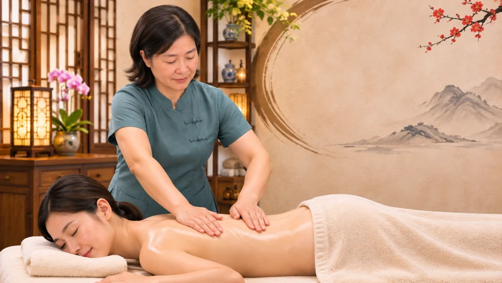

按AIイメージ・10秒動画
安定した適度な接触
一定箇所への接触と離す動き
按の手技を見る → AIによるブランドイメージ
AIによるブランドイメージJIANG MERIDIAN WELLNESS
江瑞玲経絡リラクゼーション・日常のくつろぎ
雲林を主な相談地域とし、嘉義からのお問い合わせも歓迎します。肩・首や背中のリラクゼーション、日々の養生、按・揉・推・撥の四つの手技をご紹介します。実際のサービス内容と場所は事前にご確認ください。
雲林を中心に・嘉義からのお問い合わせも歓迎 ｜ 0912-202-025
MEET JIANG
江瑞玲経絡リラクゼーションの理念は、手技ごとのリズム、力加減、触れられる感覚から始まります。一人ひとりの感覚を尊重し、日常にくつろぎを取り入れます。
経絡リラクゼーションに心を込め、
くつろぎのひとときに寄り添います。

FOUR TOUCH TECHNIQUES
接触、方向、リズムから四つの手技それぞれの特徴を知りましょう。
PERSONAL CARE
生活の場面から、部位ごとの相談内容を知りましょう。実際のサービス項目や利用方法は江瑞玲にご確認ください。
長時間のデスクワークやうつむく姿勢、仕事の後に肩・首周辺を休めたい方へ。
相談内容を見る →長時間座ったり立ったりした後、忙しい一日の後に背中の手技の接触やリズムを楽しみたい方へ。
相談内容を見る →腰・臀部周辺のくつろぎを大切にし、自分に合った利用方法を相談したい方へ。
相談内容を見る →日常で歩いたり立ったりすることが多く、脚・足を休める時間を取りたい方へ。
相談内容を見る →パソコン作業や集中した仕事の後に、静かな休息時間を取りたい方へ。
相談内容を見る →生活習慣に合わせ、手技によるリラクゼーションや日々の休息の選択肢を知りたい方へ。
相談内容を見る →クリックすると外部サービスのYouTubeが読み込まれます。YouTubeで直接見る ↗
WELLNESS JOURNAL
伝統的な手技文化、日常の活動、初めての相談に向けた準備から、自分の生活リズムを整えましょう。
TRADITION & TOUCH
経絡は東洋の伝統的な身体観の用語であり、現代の民俗調理は医療行為とは異なります。
本文を読む→EVERYDAY MOVEMENT
仕事の終了を待たず、立ち上がる時間、休息、活動を一日の中に取り入れましょう。
本文を読む→LIVING WITH BALANCE
十分な睡眠、バランスのよい食事、規則的な活動、休息は少しずつ実践できる生活の基礎です。
本文を読む→APPOINTMENT INQUIRY
雲林を中心に、嘉義からのご相談も歓迎します。場所、内容、料金、時間帯は双方で事前に確認します。
0912-202-025台湾国外から：+886 912 202 025。
携帯電話番号で江瑞玲のLINEアカウントを検索できます。
LINEを開く → 友だち追加 → 検索 → 電話番号。台湾（+886）を選択し、下の番号を入力して「江瑞玲」と表示されることを確認してから友だち追加してください。
上の番号を選択して手動でコピーすることもできます。
FAQ
現在は雲林・嘉義を主な相談対象地域としています。実際の場所や利用方法は直接ご確認ください。個人の住所はサイトに掲載していません。
0912-202-025へお電話いただくか、予約ページで相談メッセージを作成してください。内容、時間帯、場所、料金は双方で事前に確認します。
按は一定箇所への接触、揉は円を描くリズム、推は方向に沿った動き、撥は細やかな局所への接触を表現します。実際のサービス方法は事前にご相談ください。
接触範囲、心地よさ、力加減の好みは事前にお伝えください。途中で不快感があればすぐに伝え、該当する動作を中止してください。